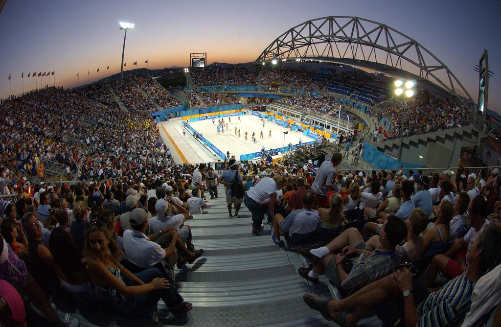

Como organizar um evento esportivo
by Equipe Tini
Postado em 14 de Fevereiro de 2019 at 13:10 PM

Diversos
Eventos esportivos tem um cunho de incentivo social muito importante, pois trazem a importância da prática de atividades físicas. Eles estão presentes ao longo de nossa vida, seja em eventos da escola ou grupos de corrida da empresa, o evento esportivo é sempre democrático e plural.
A organização de um evento esportivo sempre traz algumas dúvidas, como: será que as pessoas comparecerão? Vou ter verba o suficiente? Ele vai gerar algum lucro? Quais os recursos que posso utilizar para torná-lo mais atrativo? Qual é a melhor maneira de divulgá-lo? Como conseguir patrocinadores?
Essas são apenas algumas dúvidas que permeiam esse universo. Então, se você não sabe como nem por onde começar a planejar um evento esportivo de sucesso, fique tranquilo! Preparamos este material para que você organize seu evento com qualidade! Deixe a TINI simplificar para você!
Porque apostar em um evento esportivo?Os eventos esportivos se destacam dos sociais, pois a experiência dos participantes vai além da socialização, seu caráter é inclusivo e proporciona um engajamento muito positivo.
A estimulação e o encantamento do seu público-alvo irão gerar um maior impacto sobre ele, baseado nas informações que você consegue compreender. Evite "chover no molhado", o seu evento tem que ser único para o seu público da mesma forma que seu público tem que se identificar como único para o seu evento!
Entender as necessidades e identificar as peculiaridades do seu público pode te apoiar a criar eventos singulares como por exemplo: se você sabe que seu público participa de um grupo de corrida, adora roupas esportivas e adere a uma dieta sem glúten, você pode criar o evento de lançamento de um grupo de corrida com uma feira de produtos semglúten e um desfile de lançamento de roupas esportivas tecnológicas. Lembre-se de que o importante é conhecer o seu público e encontrar maneiras de superar as suas expectativas, para que desperte o seu interesse em participar da atividade.
Programar e planejar sempreComo qualquer outro tipo de ação, você precisa estabelecer as etapas para a realização de cada processo, envolvendo o pré, durante e pós evento. Isso é importante para que você acompanhe o que já foi feito e o que ainda precisa ser realizado dentro do prazo estipulado. Por isso, é importante você fazer um check-list contendo algumas informações necessárias.
Você pode inclusive utilizar ferramentas que envolvam toda sua equipe para que todos tenham visibilidade do progresso, facilitando assim o melhor desempenho em cada etapa.
Alguns pontos fundamentais para sua organização:
A escolha de um local adequado, definir o horário e a temática são essenciais para o planejamento logístico do seu evento. O conceito é importante porque norteará todos os próximos passos. Se você optar por um local ao ar livre (muito comum para a realização de eventos esportivos), tome cuidado para ter um plano B em caso de chuva, como por exemplo, alugar tendas ou transferir a data.
Essa etapa é muito importante para tornar a atividade um diferencial. Além das atrações, é necessário pensar em quais ações serão desenvolvidas: fuja do óbvio! Criar apenas uma palestra sobre a importância do spinning, as pessoas não vão comparecer!
Agora trazer artistas e personalidades da área, alguém expert no assunto e promover um bate-papo, um workshop sobre aquela atividade que está bombando e integrar a atração principal com as secundárias, como, por exemplo, jogos, brincadeiras de integração, gincanas, sorteio de brindes... Fará com que as pessoas olhem para seu evento de forma curiosa e desperte a sua atenção.
Além disso, se ela se divertir nas atividades, seu objetivo de promover a qualidade de vida com o esporte, será concluído e lembrado de maneira positiva!
Faça o relatório financeiro contendo uma lista com todos os fornecedores que você vai precisar. O importante é ter, pelo menos, três orçamentos de cada item para que você tenha um comparativo e possa escolher a melhor opção. Mas lembre-se que a barganha é sempre bem vinda! Você pode aproveitar seu evento para divulgação destes parceiros, utilize isso como forma de negociação para descontos!
Barganha é bom, mas patrocínio é ainda melhor. Depois de ter feito o relatório financeiro do seu evento, você pode notar que normamelmente verba é um desafio, mas isso não pode ser um decisor para não investir em atrações inovadoras e fugir do comum. Para isso, uma etapa muito importante do processo é a busca por patrocinadores.
Na área esportiva é fundamental buscar patrocinadores de peso para a realização do evento, focando no aumento do alcance e interesse do público. Somente com suporte financeiro envolvido você realiza todas as ações idealizadas.
A TINI vai te ajudar a conseguir os melhores patrocinadores com essas dicas. Confira!
O primeiro passo é ter em mente que uma empresa de grande porte pode investir R$ 2.000,00 em seu evento, enquanto uma empresa de pequeno porte investe somente R$ 500,00. Claro, os números aqui são fictícios, mas é apenas para você ter uma base de que nem todas as empresas podem inserir o mesmo valor e, é relevante que ambas possam participar.
Então, crie cotas de patrocínio, que você pode chamar de ouro, prata e bronze. O importante aqui é ter claramente o que cada cota de patrocínio pode conter. Isso porque quem optar pela cota ouro precisa ter mais benefícios que justifiquem o investimento, caso contrário, ele poderá optar pela cota mínima.
Outro critério que precisa ser muito bem elaborado é a confirmação de presença. Já imaginou comprar alimentação para 100 pessoas e comparecer 500? Ou ao contrário, imagine o prejuízo!
Plataformas de gestão de emissão de ingressos e gestão de entradas podem apoiar sua tarefa para que você tenha maior acuracidade no dimensionamento de seu evento.
Gere Impacto.
Normalmente em eventos esportivos cujo objetivo é promover o bem-estar, a entrada é gratuita, então organize a entrega de doações para ajudar ONGs locais como uma forma de ingresso. Pesquise instituições que promovam a saúde das pessoas e conecte o público participante, ajudando também o próximo.
Seja Visto.
De nada vai adiantar você criar um evento espetacular se não tiver um bom plano de divulgação. Caso contrário, as pessoas não comparecerão com a desculpa de que não ficaram sabendo! Criamos algumas dicas de divulgação. Leia mais!
Crie uma identidade visual, de preferência em parceria com uma agência especializada, que de uma cara ao seu evento, onde poderá ser reconhecido em qualquer lugar.
Um meio barato e com alta taxa de visibilidade são as redes sociais. Crie um planejamento de conteúdo a ser postado diariamente, com informações relevantes.
Nada melhor do que criar um evento e veiculá-lo com um site personalizado. Nele você trabalha melhor as estratégias de marketing de conteúdo, criando matérias com os patrocinadores.
Seja multiplataforma para tornar o site atrativo, criando vídeos, inserindo gifs e novidades interessantes ao público. Além disso, faça a integração do seu site com as postagens nas redes sociais e newsletter.
Elabore um plano de divulgação pós-evento, com criação de agradecimento via envio de e-mail aos participantes, aplicação de pesquisa de satisfação para mensuração dos resultados e divulgação de fotos para a imprensa. Se tiver alguma forma de competição, faça foto dos vencedores e pegue um pequeno depoimento para publicar no site, blog e mídias sociais. Explore bem os relacionamentos na última etapa do processo, deixe todos com gostinho de quero mais, lembrando do seu evento.
Esperamos que este guia tenha sido valioso para que você tenha entendido a importância do planejamento. Desejamos que você organize o seu de maneira excelente. Até o próximo conteúdo!
E lembre-se, conte com a TINI para que o seu evento proporcione uma experiência ótima ao seu cliente desde o começo!